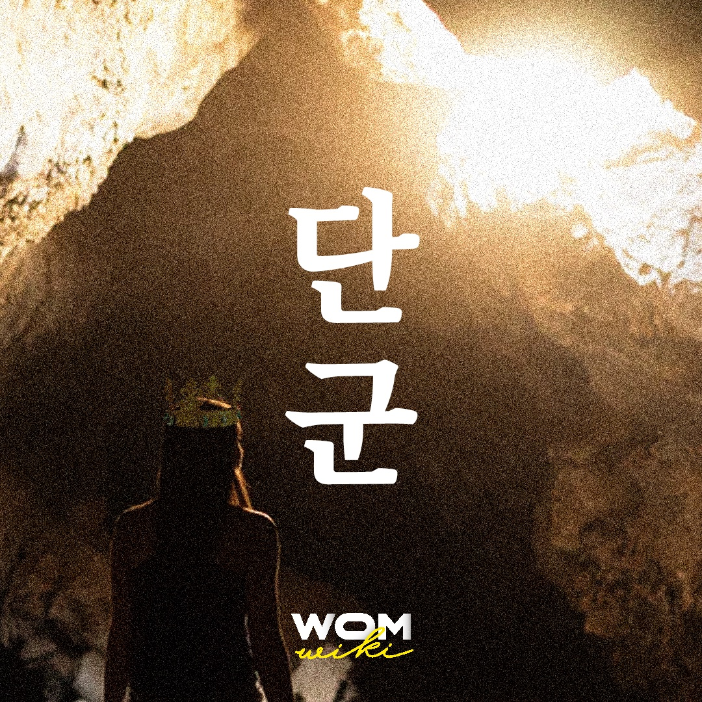

단군 신화의 주인공이자, 고조선을 건국한 것으로 알려진 가상의 인물이다. 
“하늘을 다스리는 신(환인)의 아들인 환웅은 인간 세상을 사랑했다. 그는 인간 세상을 편안하게 해 주려고 하늘 세상의 사람들을 이끌고 신단수 아래로 내려왔다. 그리고 그곳에 신시를 만들어 다스렸다. 어느 날 곰과 호랑이가 찾아와 인간이 되게 해 달라고 부탁했다. 환웅은 쑥과 마늘만을 먹고 동굴에서 100일을 견디면 인간이 될 수 있다고 했다. 그러나 호랑이는 이를 견디지 못해 동굴에서 나왔고, 곰은 21일 만에 인간이 되었다. 환웅은 인간 여자로 변한 곰(웅녀)과 결혼해 아들을 낳았는데, 그가 바로 단군이다. 단군은 태백산에 나라를 세우고 이름을 조선이라고 했다.”1
단군신화는 오랜 세월 구전되어 내려오다 고려 후기 ‘삼국유사’에 기록되었다. 사실적 연대에 비해 상대적으로 집필 연대가 늦어진 단군신화는 재해석 될 필요가 있다.
한국사 시대구분에 의하면 단군신화의 실제 시기는 신석기시대 말기로 모계 중심의 질서가 공고히 유지되던 시기였기에 고조선의 지도자인 단군왕검은 남성이 아닌 여성이었을 가능성이 크다.
단군왕검은 고조선을 지배하던 당시 통치자의 칭호로서 단군은 종교지도자를, 왕검은 정치지도자를 뜻한다. 고대시대에는 여성 사제들이 병든 사람을 낫게 하고 가뭄에는 비를 내려달라고 제사를 지냈으며 사람들의 미래를 예언해주기도 했다.
이러한 여성 사제를 호남지방에서는 무당의 사투리인 ‘당골’이라고 불렀는데, 단군의 어원은 당골에서 유래했다는 것이다. 또한 현재까지 무당의 계보 이름은 대체로 모계를 따르고 무당의 전신이 종교적 영매였음을 감안하면 당시 여성지도자가 존재했을 가능성이 매우 크다. 그러나 집필 연대인 고려 후기는 남성중심적인 위계질서를 중시하는 유교 사회였고 이를 반영해 단군왕검을 여성이 아닌 남성으로 표현했을 것으로 보인다.